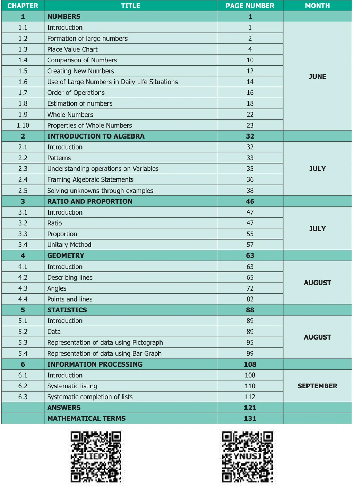

GOVERNMENT OF TAMIL NADU
STANDARD SIX
TERM - I
VOLUME - 2
MATHEMATICS
A publication under Free Textbook Programme of Government of Tamil Nadu
Department Of School Education
Untouchability is Inhuman and a Crime
Government of Tamil Nadu
First Edition - 2018
Revised Edition - 2019, 2020, 2022, 2023, 2025
Reprint - 2021, 2024
(Published under New syllabus in Trimester Pattern)
NOT FOR SALE
Content Creation
State Council of Educational Research and Training
© SCERT 2018
Printing & Publishing
Tamil NaduTextbook and Educational Services Corporation
www.textbooksonline.tn.nic.in
A call can change your life (24 × 7 toll free helplines for children below 18 years)
If you are forced into Child Marriage or Child Labour, If you are Emotionally, Physically, Sexually Harassed or Abused,
If you feel unsafe dial CHILDLINE 1098 Night & Day
Caller details will be kept confidential
If you are feeling Threatened or being Abused or Harassed – Emotionally, Physically or Sexually, If you are feeling unsafe, If you need guidance for Examinations or Higher Education
Dial 14417
Caller details will be kept confidential
Mathematics is a unique symbolic language in which the whole world works and acts accordingly. This text book is an attempt to make learning of Mathematics easy for the students community.
Mathematics is not about numbers, equations, computations or algorithms; it is about understanding
— William Paul Thurston
Activity: To enjoy learning Mathematics by doing
Try this/these: A few questions which provide scope for reinforcement of the content learnt.
Do you know?: To know additional information related to the topic to create interest.
Think: To think deep and explore yourself!
To understand that Mathematics can be experienced everywhere in nature and real life.
Miscellaneous and Challenging problems: To give space for learning more and to face higher challenges in Mathematics and to face Competitive Examinations.
Note: To know important facts and concepts
ICT Corner
Go, Search the content and Learn more!
CONTENT

E - Book
Evaluation